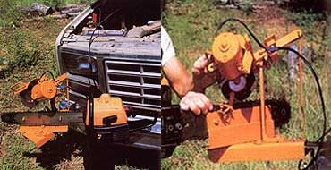

LEFT: The 12-volt sharpener can take to the field with the rest of your woodcutting tools because it's been designed to clamp to any convenient spot on your vehicle's bumper. The clip-on leads connect directly to each battery post. RIGHT: Once the chain saw bar is bolted to the tool's mount, adjust the swivel stops to match your particular chain's cutter pitch, position the chain by using the lever and arm to set the tooth stop, and gauge the depth of cut with the T-handle.